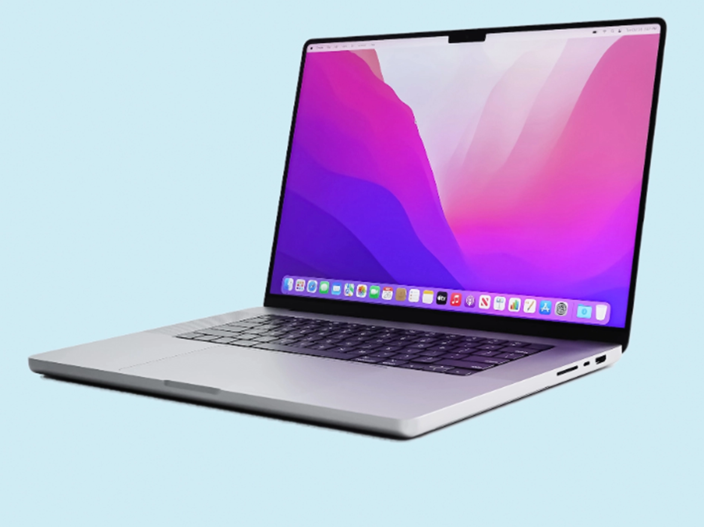
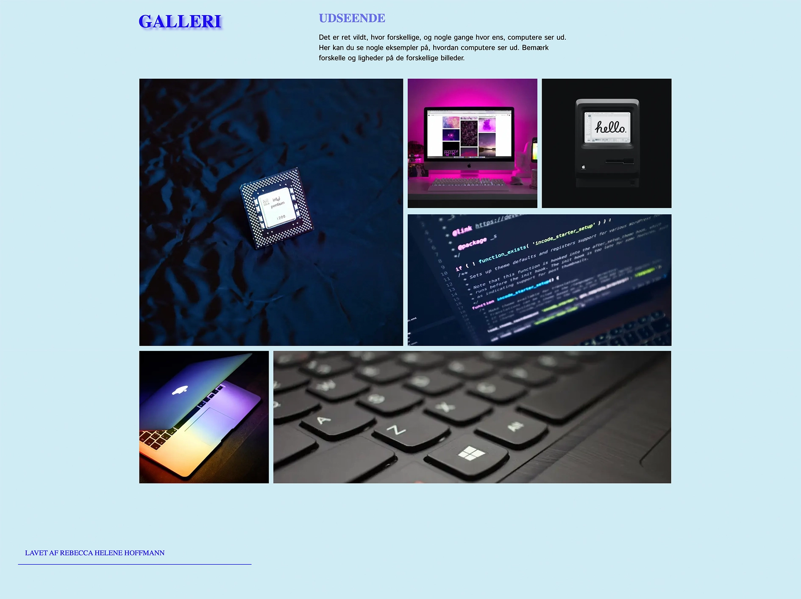
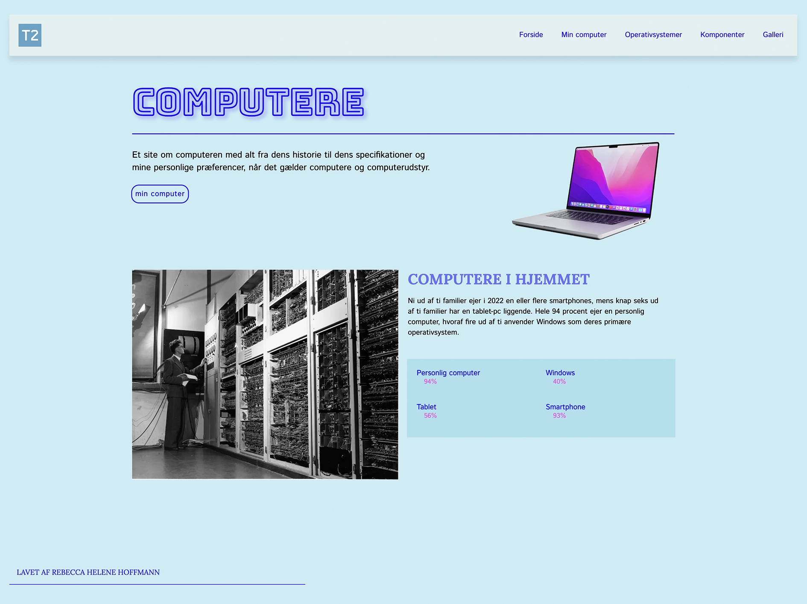
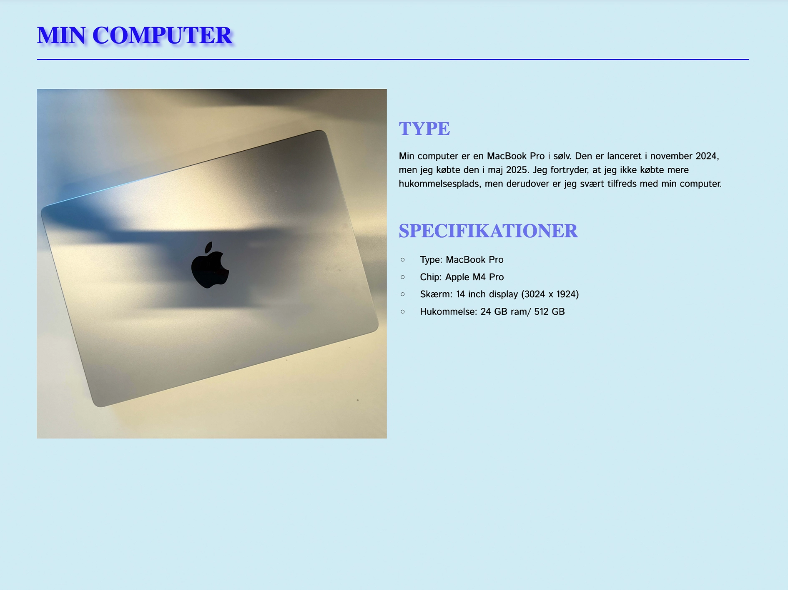

Tema 2 - grundlæggende web
Site: Website
Formål
Formålet med tema 2 er at give en grundlæggende introduktion til de mest anvendte redskaber i en multimediedesigners værktøjskasse. Disse redskaberne udgør fundamentet for resten af uddannelsen på MMD. Temaet introducerer grundlæggende faglige begreber inden for design af digitale brugergrænseflader, digital indholdsproduktion, digital kommunikation og responsivt webdesign. Derudover lærer man at opsætte websites i HTML og CSS, samt arbejde med grafik, billedbehandling og Figma.

Proces
Arbejdet med “website” var fagligt udfordrende og kan bedst beskrives som at skulle lære et helt nyt sprog. Gennem temaet lærte jeg, hvordan en hjemmeside er opbygget med HTML-elementer: header, main og footer. Jeg lærte at analysere hjemmesider ud fra gestaltlove, viden om lokale og globale elementer samt forskellen mellem typografierne sans serif og serif. Derudover lærte jeg også om responsivt design med mobile-first-princippet, CSS Grid og media-queries. I udviklingen af “website” arbejdede jeg med udleverede grid-øvelser, som er implementeret på det færdige site. Samlet set var det en lærerig proces, der gav mig lyst til at arbejde videre med de nye færdigheder, jeg har fået gennem temaet.

Produkt
Produktet i tema 2 hedder “Website”, en hjemmeside om computere. Indholdet var udarbejdet på forhånd, da den primære læring var at style og layoute med udgangspunkt i HTML og CSS. Hjemmesiden består af fem HTML-sider og to CSS-filer, og alle sider har en header med en navigationsmenu og en footer. Navigationsmenuen var udviklet på forhånd, men jeg har selv stået for den visuelle styling. Jeg fokuserede på at skabe en rød tråd og tog inspiration fra forsidens første billede, der viser en computer med et klassisk Apple-baggrundsbillede. Derfor har jeg arbejdet med en farvepalette bestående af nuancer af blå, lilla og pink, som går igen på tværs af hjemmesiden.
Se site her
Læring
Tema 2 og arbejdet med studiestartsprøven gav mig et godt fundament og indblik i, hvad multimediedesign-uddannelsen byder på. Selvom forløbet introducerede mig for helt nye og fagligt krævende fagområder, var det samtidig motiverende at blive udfordret og at lykkes med kodning for første gang. De små succesoplevelser var afgørende. Jeg fik kendskab til designprincipper og gestaltlove, men jeg oplevede, at det var svært at omsætte denne viden i arbejdet med “Website”. Det skyldtes sandsynligvis, at alt på daværende tidspunkt var nyt, og at jeg endnu ikke havde erfaring med webdesign. I tema 2 gik jeg fra at vide ingenting om hjemmesider til at opnå en grundlæggende forståelse for HTML og CSS. Særligt arbejdet med CSS Grid har givet mig kompetencer, som jeg tager med videre, ligesom jeg har fået en bedre forståelse for strukturering af layout og styling i CSS. Derudover har jeg opnået viden om bæredygtighed i forbindelse med billedoptimering, herunder valg af filformat og billedstørrelse, og hvordan disse faktorer påvirker hjemmesidens performance.
